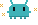
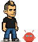

What Is WebMCP? Why It Could Matter for Your Website Soon
Someone opens ChatGPT and types: "find me a private chef for a birthday party this Saturday."

What happens next is either fast and right, or slow, expensive and wrong. WebMCP is the reason it's about to become the first one.
The ten-second explanation
When an AI assistant lands on a website today, it doesn't really "see" a website.

It sees a pile of unlabelled buttons and has to guess. It pokes at one, takes a screenshot, looks at the picture, guesses again. Every screenshot it has to think about costs the assistant time and tokens — think of tokens as its phone bill, and a screenshot as an expensive call.
WebMCP is a set of instructions a website can hand straight to an AI agent: here's how to book a table, here's how to check a price, here's how to search the menu. No more guessing, no more screenshots.
Why this is worth knowing before it's everywhere
More people are starting to ask an assistant to do things for them instead of doing the searching themselves.
Find a chef, book a table, get a quote. If your site can't answer clearly, one of two things happens: the assistant gives up and tries a competitor, or it limps through the slow, expensive method — and a slow answer loses a customer just as fast as a wrong one.
This isn't only a technical problem. It's a business one, and it will show up on the sites that are hardest to use long before anyone tells you why bookings dropped.
What's actually happening right now
Google and Microsoft are building WebMCP together, inside the W3C's Web Machine Learning Community Group. Chrome opened a public origin trial in Chrome 149, announced at Google I/O in May 2026, and Expedia, Booking.com, Shopify, Etsy, Instacart, Target, Credit Karma and TurboTax are already testing it.
Worth being precise: it's off by default, Safari and Firefox haven't committed to it, and the spec is still moving. This is early. But two of the biggest browser makers agreeing on the same approach from day one doesn't happen often.
For developers: how it actually works
WebMCP gives you two ways to expose an action, and which one you use depends on what the action is.
Declarative, for plain forms. If the action is already a normal HTML form, you just label it. A few new attributes tell the browser what the form does, and it builds the tool description for you — no JavaScript required:
<form toolname="book-private-chef" tooldescription="Book a private chef for an event">
<input type="date" name="date" toolparamdescription="Date of the event" required>
<input type="number" name="guests" toolparamdescription="Number of guests" required>
<button type="submit">Request a chef</button>
</form>Imperative, for everything else. If the action isn't a form — checking a booking, updating a basket, anything driven by JavaScript — you register it with the browser's modelContext API directly:
await document.modelContext.registerTool({
name: "check-booking-status",
description: "Check the status of an existing booking by reference number",
inputSchema: {
type: "object",
properties: {
reference: { type: "string", description: "The booking reference number" }
},
required: ["reference"]
},
async execute({ reference }) {
const status = await getBookingStatus(reference);
return { content: [{ type: "text", text: `Booking ${reference} is ${status}.` }] };
}
});Most small business sites will only ever need the first one. If your forms are already clean and clearly labelled, you're most of the way there before writing a line of the new code.
You shouldn't have to keep track of any of this. I do.
Most of what's in this article will look different within a year. New attributes, more browsers on board, possibly a different name for the whole thing. That's normal this early on — and it's exactly why a business owner shouldn't be expected to follow it on top of everything else they're already doing.
That part is mine to worry about, not yours.
When I build or look after a website, I keep watching what changes underneath it — new standards, new ways browsers and AI assistants read a page — together with a small set of AI agents I run for exactly this. Your site gets brought up to date quietly, in the background, so you stay easy to find on whatever someone uses to search next, without you ever having to notice it happened.
Written by Manuel Docampo with the help of AI research and drafting tools. Reviewed, edited and fact-checked by me — the views here are my own.